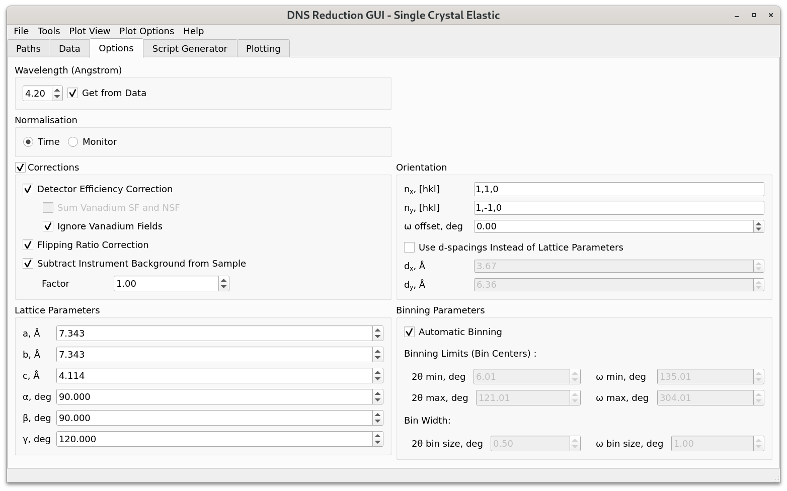

\(\renewcommand\AA{\unicode{x212B}}\)
DNS Single Crystal Elastic - Options Tab¶
{kind=link}
Wavelength sets the wavelength of the neutron beam. If Get from Data is checked, then the wavelength is read from the data files. If the selected data files have a different wavelength, or the wavelength does not match the corresponding frequency of the velocity selector, a warning will be given to the user and Get from Data checkbox will be unselected. In this case, the wavelength will have to be set manually by the user.
Normalisation can be used to select whether the dataset should be normalised by measurement time or monitor counts.
Corrections should be selected to activate various options for data reduction.
Detector Efficiency Correction corrects for different detector efficiencies by normalizing selected sample data on vanadium measurements. When the detector efficiency correction checkbox is selected, the user must select the corresponding vanadium and empty container measurements under the Standard Data view of the Data tab. The empty measurement is required because background subtraction from vanadium is mandatory. Detector efficiencies will be evaluated for each of those vanadium “field” channels that correspond to the user-selected sample “field” channels, unless either from Sum Vanadium SF and NSF and Ignore Vanadium Fields options is additionally selected by the user (both options can’t be selected at the same time).
Sum Vanadium SF and NSF calculates detector efficiencies by combining vanadium spin-flip (SF) and non-spin-flip (NSF) data for each of the vanadium polarisation components that correspond to the selected polarisation components (\(x, y\), or \(z\)) of the sample.
Ignore Vanadium Fields calculates detector efficiencies by combining all selected vanadium “fields”. In this case, the calculated detector efficiencies can be applied to any of the selected sample “fields”.
Flipping Ratio Correction corrects for the finite flipping ratio, using NiCr data selected under the Standard Data view of the Data tab. Similarly to the case with detector efficiency correction, when the flipping ratio option is selected, the corresponding empty measurement must also be selected (for the background subtraction from NiCr). Both, spin-flip and non-spin-flip measurements are required to be selected in Sample Data and Standard Data views of the Data tab.
Subtract Instrument Background from Sample can be enabled to subtract the instrument background from sample data. The corresponding Factor box can be used to set a scaling factor for this correction.
The Lattice Parameters group box can be used to set the lattice parameters of the sample. As a result, \(d\)-spacings \(d_x\) and \(d_y\) for vectors \(n_x\) and \(n_y\), specified in the Orientation group box, will be automatically calculated. These \(d\)-spacings will be used by the program for transforming the intensity function from \(2 \theta-\omega\) space to \(n_x-n_y\) in \(Q\)-space. Alternatively, the user can set the \(d\)-spacings manually by checking the Use d-spacings Instead of Lattice Parameters checkbox (in the Orientation group box) and providing the corresponding values for \(d_x\) and \(d_y\).
The Orientation group box can be used to specify the horizontal scattering plane. For this, hkl for vectors \(n_x\) and \(n_y\), which define the horizontal plane, must be provided (\(n_x\) and \(n_y\) do not need to be perpendicular). In case when \(n_x\) and \(n_y\) are not perpendicular, instead of the vector \(n_y\), the GUI will use the vector that is perpendicular to \(n_x\) and lies in the (\(n_x\), \(n_y\)) plane. The \(\omega\) offset box can be used to set the deviation of the rotation angle \(\omega\) from 0 for the position when \(n_x\) is parallel to the direct beam.
When the Automatic Binning checkbox is selected, the interface will determine the minimum and maximum values for the scattering angle \(2 \theta\) and the sample rotation angle \(\omega\) based on the angles specified in the selected sample data files. The default bin size values for the scattering and sample rotation angles are chosen to be \(0.5^{\circ}\) and \(1^{\circ}\), respectively. When Automatic Binning is unselected, the user can manually choose the desired bin sizes, as well as the angular ranges that will be used for plotting under the Plotting tab.